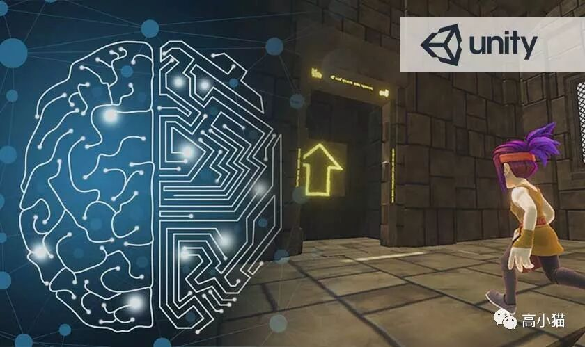

在Unity的AI Org下面的ml-agents组一晃也快工作了近两年了。感觉我们组的东西还是很有意思的，所以想着写一篇文章做一下总结。
一开始整理才发现东西实在太多，这一篇就先做一个简单的介绍，然后把一些官方的示例环境贴出来吧~之后有时间再总结一些非官方做的有意思的东西。
Unity ML-Agents是个啥？
Unity ML-Agents是一个开源的项目。这个项目旨在帮助人们把任何用Unity做出的游戏环境用于深度强化学习和模仿学习的人工智能训练。
项目里最核心的部分有两块。第一块可以把任何Unity的游戏接上一个与外界交互的信息通道，让外界可以从游戏中拿信息，然后可以把指令传入游戏中执行。第二块在第一块的基础上，实现了一些AI的训练算法，比如深度强化学习和模仿学习等等。
这样说可能有点太抽象了，我们举一个Deepmind训练星际AI的例子可能就更加清楚了。
Deepmind为了训练AI来玩星际，需要可以把星际这个游戏里面的信息拿出来，拿去给AI做训练，然后AI也需要把相关的指令传回星际这个游戏，指挥游戏执行相应的操作。
Deepmind针对的是星际这一个游戏，而我们做的是一个通用解决方案，针对的是很多不同的游戏。这是因为Unity是一个制作游戏的工具，可以做出各种各样的游戏。
Deepmind因为只是针对一个游戏，所以可以做大量特殊的优化，最终也可以训练出来非常强大的AI。而Unity ML-Agents做的是一个通用解决方案。而且因为没有Deepmind的计算资源以及相关的分布式训练支持，所以只能训练出来比较简单的AI。不过就算是只能训练比较简单的AI，也对人们意义重大。
Unity ML-Agents这个开源项目的地址在https://github.com/Unity-Technologies/ml-agents，目前的star数已经达到7.1k了，在Github的深度强化学习这个主题下排名第三。
7.1k的star数是什么概念呢？在2018 CSDN评选出的30个最火的机器学习项目里，排名第一的项目有13k的star数，第五名有6k的star数。参见一文了解 2018年最火爆的30个机器学习项目
那么为啥这个项目这么火呢？
我觉得主要是因为一方面这个项目非常好上手，让人可以很简单地尝试深度强化学习这个最前沿的AI技术，这对于游戏开发者来说非常有用。事实上我们跟大量的游戏公司有联系，也有很多的独立开发者找到我们，给我们展示他们利用我们项目训练出来的AI。
另一方面它依托着非常强大的Unity游戏引擎，可以让人很轻易地制作出各种深度强化学习所需要的训练用的虚拟环境，对于相关领域的研究人员价值非常大。Unity ML-Agents 的那篇论文已经被引用了74次了，引用数还在不断增加。
因为这个工具确实很好用，在深度强化学习领域用的人也很多，因此Udacity 的 深度强化学习 nanodegree的课程里面也大量采用了Unity ML-Agents的官方环境用于教学。
吹了这么多，我觉得接下来可以展示一些官方的训练示例，让大家看一看这个工具到底可以做到些啥。
官方示例
1. 3D平衡球
这个是Unity ml-agents 官方环境中的的3dball，是我们组最早做的第一个环境，也是经常用来做测试的环境。
在这个环境中AI的目标就是控制这块平板，让上面的小球不要掉下去。这个任务虽然看起来简单，但是你要用代码实现真的不太简单。用深度强化学习训练倒是非常简单，一般几分钟就可以让AI学会如何控制平板来平衡小球了。
2. 人工智能吃香蕉
这个是Unity ml-agents 官方环境中的的banana环境，最早用来做模仿学习的demo环境，因为效果蛮棒的。你如果控制一直转圈，所有的AI都会模仿你跟着转。
3. 人工智能小跳跳
这个是Unity ml-agents 官方环境中的bouncer环境，这个是我们用来展示on demand decision的环境。什么叫on demand decision呢？用人话说就是平时不用AI指挥我干啥，当满足某些条件的时候才把AI叫出来问一下。在这个环境里，只有当小跳跳接触到地面的时候，才会向模型发送当前的状态并且得到下一步的指示（往哪里跳的指示）。
写到这里意识到一篇文章只能放三个视频。。。那我下周继续介绍剩下来的官方示例吧。读者要是有兴趣的话，也可以多多转发，并且留言让我知道，不然说不定下周我就鸽了。